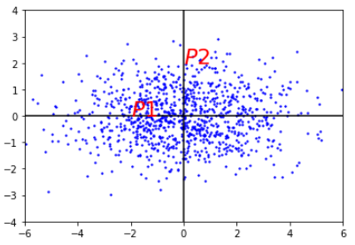
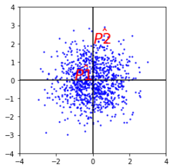
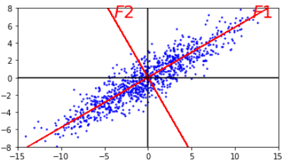
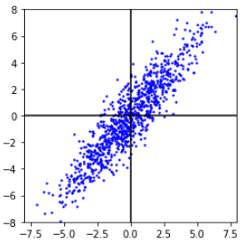

本文曾发表在博客园中，重新修订发表于此。
马氏距离就是用于度量两个坐标点之间的距离关系，表示数据的协方差距离。与尺度无关的(scale-invariant)，即独立于测量尺度。
基本思想（intuition）
如下图的过程（以两个维度作为例子），此例的数据重心为原点，$P1$,$P2$到原点的欧氏距离相同，但点$P2$在$y$轴上相对原点有较大的变异，而点$P1$在$x$轴上相对原点有较小的变异。所以$P1$点距原点的直观距离是比$P2$点的小的。

马氏距离就是解决这个问题，它将直观距离和欧式距离统一。为了做到这一点， 它先将数据不同维度上的方差统一（即各维度上的方差相同），此时的欧式距离就是直观距离。

如图：统一方差后的图，$\hat{P1}$到原点的距离小于$\hat{P2}$。$P1$到原点的欧式距离和$P2$的相同。以上所说的直观距离就是马氏距离 。但是，如果不同维度之间具有相关性，则压缩的效果就不好了。如下图只在横向和纵向上压缩，则达不到上图的压缩效果。


所以在$F1$方向和$F2$方向上压缩数据才能达到较好的效果。所以需要将原始数据在XY坐标系中的坐标 表示在F坐标系中。然后再分别沿着坐标轴压缩数据。
所以，计算样本数据的马氏距离分为两个步骤：
- 坐标旋转
- 数据压缩
坐标旋转的目标：使旋转后的各个维度之间线性无关，所以该旋转过程就是主成分分析的过程。
数据压缩的目标：所以将不同的维度上的数据压缩成为方差都是1的的数据集。
推导过程
有一个原始的多维样本数据$X_{n \times m}$(m列，n行):
$$
\begin {matrix}
x_{11} & x_{12} & \cdots & x_{1m} \\
x_{21} & x_{22} & \cdots & x_{2m} \\
\vdots & \vdots & \ddots & \vdots \\
x_{n1} & x_{n2} & \cdots & x_{nm} \\
\end {matrix}
$$
其中每一行表示一个测试样本（共$n$个）；$X_i$表示样本的第$i$个维度（共$m$个） $X_i=(x_{1i}, x_{2i}, \dots, x_{ni})^{\mathrm{T}}$ ，以上多维样本数据记为${\bf{X}} = \left( {X_1}, {X_2} \cdots {X_m} \right)$。样本的总体均值为$\bf{\mu }_{\bf{X}} = \left( \mu _{X1}, \mu _{X2} \cdots \mu _{Xm} \right)$。其协方差为：
$$
\bf{\Sigma }_\bf{X}
= E\left\{ (\bf{X} - \bf{\mu}_{\bf{X}})^{\bf{T}}(\bf{X} - \bf{\mu}_{\bf{X}}) \right\}
= {\frac 1n}{(\bf{X} - \bf{\mu}_{\bf{X}})^{\bf{T}}}(\bf{X} - \bf{\mu}_{\bf{X}})
$$
协方差矩阵表示样本数据各维度之间的关系的。其中n是样本的数量
假设将原始数据集$\bf{X}$通过坐标旋转矩阵$\bf{U}$旋转到新的坐标系统中得到一个新的数据集$\bf{F}$。（其实$\bf{X}$和$\bf{F}$表示的是同一组样本数据集，只是由于其坐标值不同，为了易于区分用了两个字母表示）
$$
\bf{F}^\bf{T} =
(\bf{F}_\bf{1}\bf{,}\bf{F}_\bf{2} \cdots \bf{F}_\bf{m})^\mathrm{T} = \bf{U}\bf{X}^\mathrm{T}
$$
新数据集$\bf{F}$的均值记为$\mu _F = \mu_{F1},\mu_{F2} \cdots \mu_{Fm})$ , $\mu _F = U\mu_X$
由于将数据集旋转后数据的各维度之间是不相关的，所以新数据集${\bf{F}}$的协方差矩阵${\Sigma_F}$应该为对角阵。
由于:
$$
(\bf{F} - \bf{\mu}_{\bf{F}})^{\mathrm{T}} = \bf{U}(\bf{X} - \bf{\mu}_{\bf{X}})^{\mathrm{T}} \\
(\bf{F} - \bf{\mu}_{\bf{F}}) = (\bf{X} - \bf{\mu}_{\bf{X}})\bf{U}^{\mathrm{T}}
$$
所以：
$$
\begin {aligned}
\bf{\Sigma}_{\bf{F}} &= \bf{E}\left\{\left(\bf{F} - \bf{\mu}_{\bf{F}} \right)^{\bf{T}}\left(\bf{F} - \bf{\mu }_{\bf{F}} \right) \right\} \\
& = \frac{\bf{1}}{\bf{n}}\left(\bf{F} - \bf{\mu}_{\bf{F}} \right)^{\bf{T}}\left(\bf{F} - \bf{\mu}_{\bf{F}} \right) \\
&= \frac{\bf{1}}{\bf{n}}\bf{U}\left(\bf{X} - \bf{\mu }_{\bf{X}} \right)^{\bf{T}}\left(\bf{X} - \bf{\mu }_{\bf{X}} \right)\bf{U}^{\bf{T}} \\
& = \bf{U}\bf{\Sigma }_X\bf{U}^{\bf{T}} \\
& = \left( {\matrix{ {\lambda 1} & {} & {} & {} \cr
{} & {\lambda 2} & {} & {} \cr
{} & {} & \ddots & {} \cr
{} & {} & {} & {\lambda m} \cr } } \right)
\end {aligned}
$$
其中 $\sqrt{\lambda_i}$ 就是第$i$个维度的方差。
由于$\bf \Sigma_{\bf X}$是实对角阵，所以$\bf U$是一个正交矩阵 $\bf U^{\bf T} = \bf U^{-1}$。
以上是准备知识，下面推导一个样本点$\bf{x} = \left( x_1,x_2 \cdots x_m \right)$到重心$\bf{\mu }_{\bf X} = \left( \mu _{X1},\mu _{X2} \cdots \mu _{Xm} \right)$的马氏距离。等价于求点 $\bf{f} = (f_1,f_2 \cdots f_m)$ 压缩后的坐标值到数据重心压缩后的坐标值 $\bf{\mu }_\bf{F} = \left( \mu _{F1},\mu _{F2} \cdots \mu _{Fm} \right)$的欧式距离。
$$
\begin {aligned}
& d^2(\bf{f},\bf{\mu }_{\bf{F}} ) = (\frac {f_1 - \mu_{F1}}{\sqrt{\lambda_1}})^2 + (\frac{f_2 - \mu_{F2}}{\sqrt{\lambda_2}})^2 + \cdots + (\frac{f_m - \mu_{Fm}}{\sqrt{\lambda_m}})^2 \
& = ( f_1 - \mu_{F1},{f_2} - \mu_{F2} \cdots f_m - \mu_{Fm} )
\left (
\begin {matrix}
{\frac 1{\lambda_1}} & {} & {} & {} \
{} & {\frac 1 {\lambda _2}} & {} & {} \
{} & {} & \ddots & {} \
{} & {} & {} & {\frac 1 {\lambda _m}} \
\end {matrix}
\right)
\left(
\begin {matrix}
{f_1 - \mu_{F1}} \
{f_2 - \mu_{F2}} \
\vdots \
{f_m - \mu_{Fm}} \
\end {matrix}
\right) \
& = (\bf{f} - \bf{\mu}_{\bf{F}})(\bf{U}\bf{\Sigma}_X \bf{U}^{\bf{T}})^{-1}(\bf{f} - \bf{\mu}_{\bf{F}})^T \
& \
& = (\bf{x} - \bf{\mu}_X)\bf{U}^T(\bf{U}\bf{\Sigma}_X \bf{U}^\bf{T})^{-1}\bf{U}(\bf{x} - \bf{\mu}_X )^T \
& \
& = (\bf{x} - \bf{\mu}_X )\bf{U}^T \bf{U}\bf{\Sigma}_X^{-1}\bf{U}^{\bf{T}}\bf{U}(\bf{x} - \bf{\mu}_X )^T \
& \
& = (\bf{x} - \bf{\mu }_X )\bf{\Sigma}_X^{-1}(\bf{x} - \bf{\mu }_X)^T \\
\end {aligned}
$$
这就是马氏距离的的计算公式了。
如果$\bf{x}$是列向量
$$
{d^2} = \left( \bf{x} - \bf{\mu }_X \right)^T\bf{\Sigma }_X^{-1}\left( \bf{x} - \bf{\mu }_X \right)
$$
如果并把上文的重心$\bf{\mu }_{\bf{X}} = \left( \mu _{X1},\mu _{X2} \cdots \mu_{Xm} \right)$改为任意一个样本点$\bf{y}$，则可以得到$\bf{x}$和$\bf{y}$两个样本点之间的马氏距离公式为：
$$
d^2 = \left( \bf{x} - \bf{y} \right)^{\bf{T}}\bf{\Sigma }_{\bf{X}}^{-1}\left( \bf{x} - \bf{y} \right)
$$
参考资料
细说马氏距离